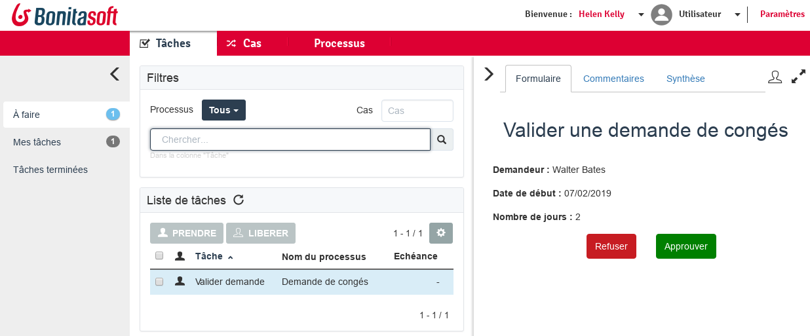

Agenda
- BPM Goals
- Bonita BPM Components
- BPMN Introduction
- Data Management
- BPMN Introduction (Continued)
- Forms
- Actors
- Connectors
- Deployment
BPM Goals
Collaborate during the definition and execution of Business Processes
Track process execution
Optimise processes
Bonita BPM Components
| Bonita Studio | ||
| Bonita Engine | } | Bonita Platform |
| Bonita Portal | ||
Bonita BPM Studio : Diagram Editor

Bonita BPM Studio : Form Editor

Bonita BPM Engine
In charge of the execution of processes
Based on Java related technologies :
- Java SE 7
- JDBC (via Hibernate and data sources)
- Java EE 6 : JSP, Servlet, JTA
- Spring
- Quartz
Packaged with the Bonita Portal in a web application (WAR or EAR)
Bonita BPM Portal
End user and administration web interface
Displays the list of available tasks
Allows to deploy and configure processes
BPMN Introduction
Standard notation (OMG) for process modelling
A process is represented by a Pool
Key elements :
 Start Event
Start Event Human Task
Human Task Automated Task
Automated Task End Event
End Event
Exercise 1
First process modelling step
Download the instructions and corrections from this link :
Data Management : Scope
3 encapsulated levels of visibilities :
- Process
- Step
- Form
Data Management : Persistence and Types
All data is stored in a database by the Engine except for transient step data and form data
Any Java Serializable type can be used
Types such as primitives and Strings are serialized in order to be persisted
Exercise 2
Adding data and using automatically generated forms
BPMN Introduction (Continued)
3 types of gateways :
 Exclusive
Exclusive Parallel
Parallel Inclusive
Inclusive
Best practice: gateways should be placed in a symmetrical manner when possible
Exercise 3
Using an exclusive gateway to pilot the process flow based on data
Forms
2 types of forms:
- Case start form
- Step form
A form is a set of widgets placed on a grid
Widgets
Widgets carry a set of configuration options :
- Name (id) and label
- Hint, tooltip, example
- Initial values, available values
- Output operation
- Conditional insertion, mandatory, read only...
- Data validation
Exercise 4
Creating forms
Actors
2 implementation options :
- Actors : mapping between the process definition and the organization
- Actor filters : logic executed at task start-up
Exercise 5
Using the default actor and an actor filter
Connectors
Allows processes to interact with the IS (opposite of the APIs that allow to pilot the Engine)
A set of standard connectors is shipped in the Studio
One can create additional custom connectors
A connector is composed of:
- a definition (Java interface) which specifies inputs/outputs
- an implementation (Java class) which defines the business logic
Exercise 6
Using a connector to send an email
Deployment
Main steps for process deployment :
- Process configuration in the Studio
- .bar file generation
- .bar deployment using the Portal
- Process configuration after deployment
- Process activation
Thank you for your attention
Any questions ? Do not hesitate.
Extra Resources :
- Documentation - documentation.bonitasoft.com
- Corporate Website - bonitasoft.com
- Community - community.bonitasoft.com